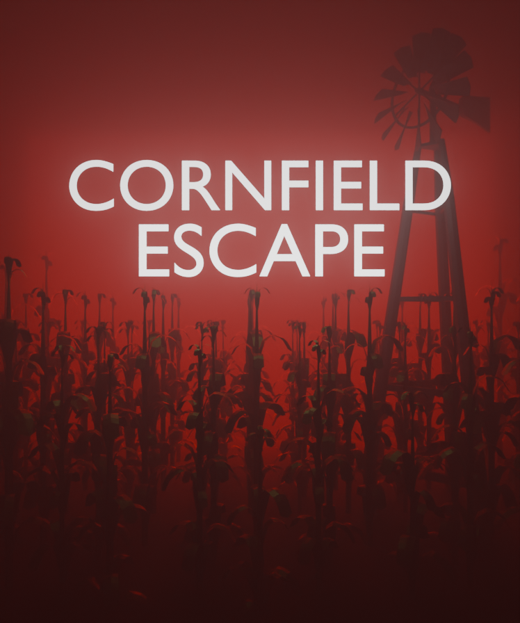

Cornfield Escape
Lost in an maze of rustling stalks, you must find the way out before something in the corn finds you.
Trapped in a dense cornfield, you must navigate hidden landmarks, avoid noise traps and outsmart a relentless stalker that hunts by sound. Stay quiet, read the signs and escape before it reaches you.

Features:
- A different cornfield every hour (no two runs alike)
- Dynamic weather, props and landmarks change the feel of each map
- Sound-driven Props: crows, running and traps all attract the enemy
- Simple controls, tense atmosphere, short sessions designed for replay